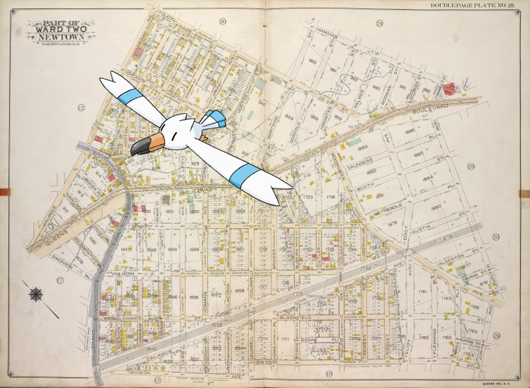

Pokémon in the NYPL archives
2018-6-28 06:10:05

Wingull +
Queens, Vol. 2A, Double Page Plate No. 18; Part of Ward Two Newtown. [Map bounded by Toledo St., Hanover Ave., Queens Blvd., Jupiter Ave., Gwydir St.; Including Division Ave., Grand St., Simonson Pl., Maurice Ave.]
.